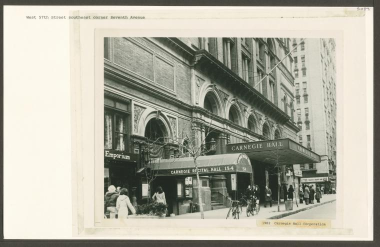
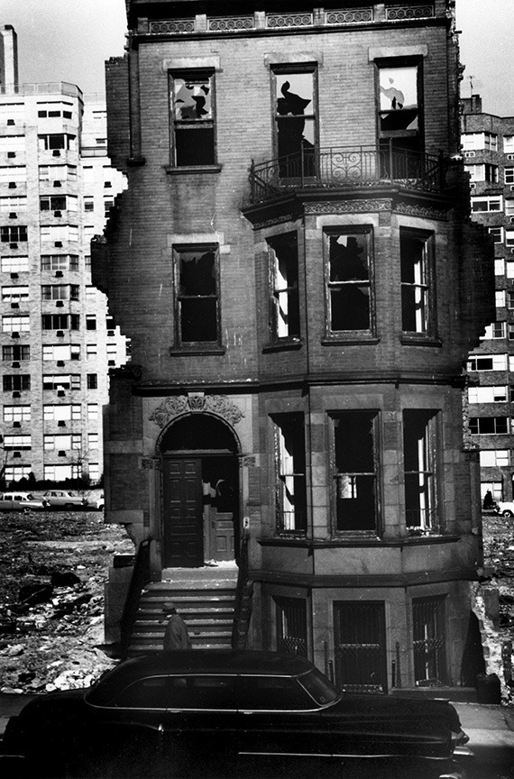
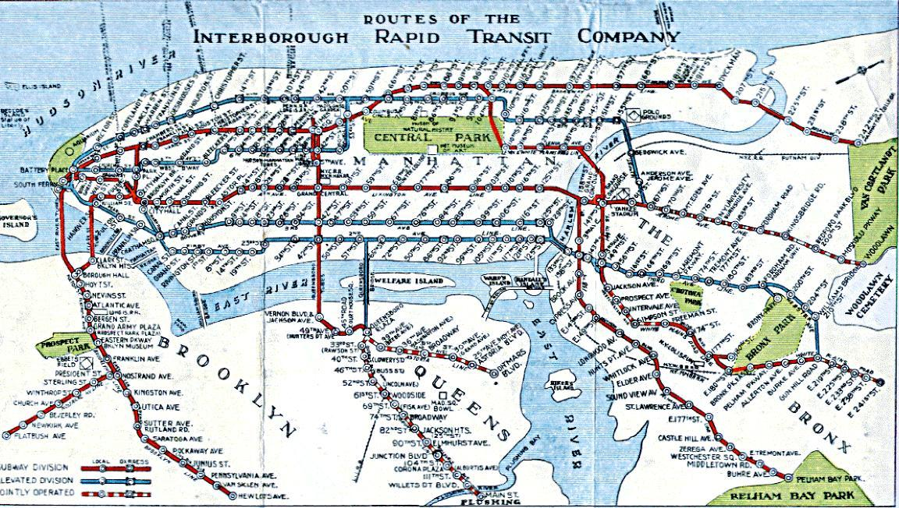
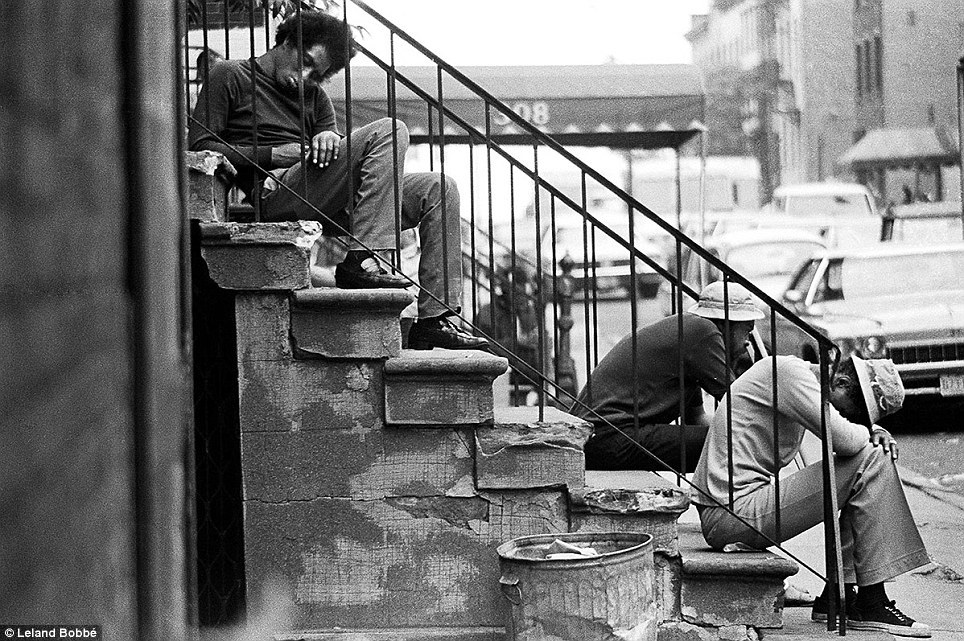
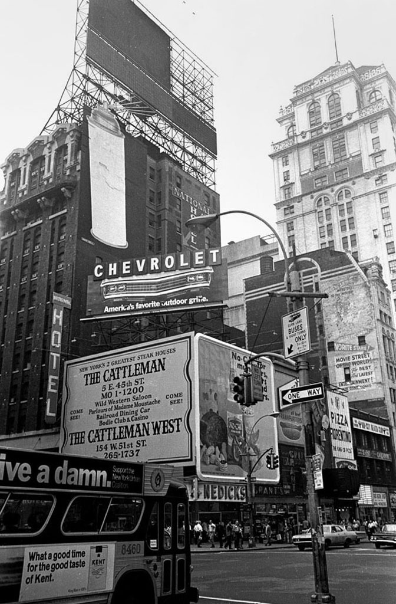
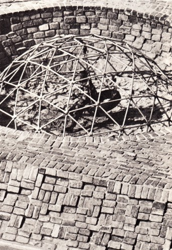
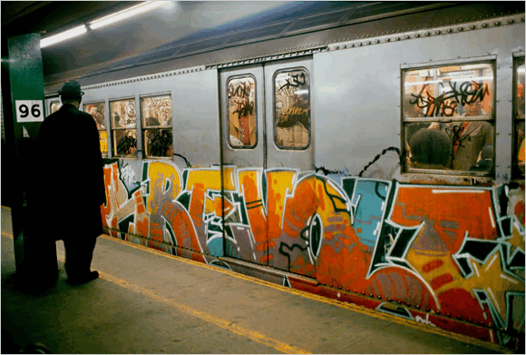
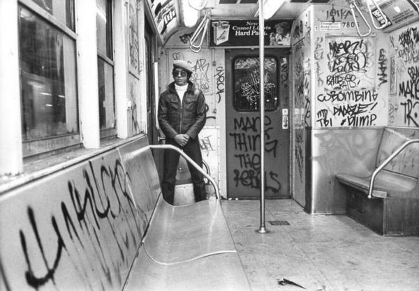
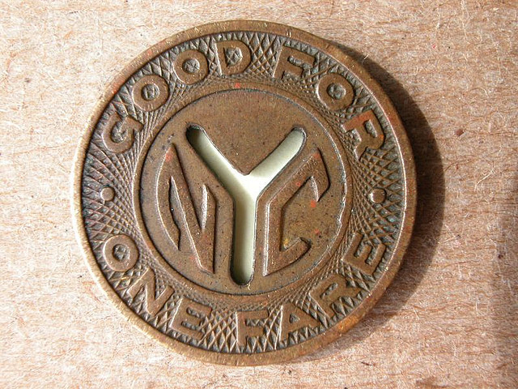

Upper West Side map, circa 1920.

Abandoned 91st Street station. Spooky.
Upper West Side map, circa 1920.

Carnegie Hall, 1982

59th Street in the 1960s. Looks a little different today.
An amazing collection of photos from the 60s.

Love this hand-drawn subway map from 1939. (From here: http://www.nycsubway.org/wiki/Historical_Maps)
Abandoned 91st Street station. Spooky.

Nice piece on the 1977 blackout: http://theboweryboys.blogspot.com/2012/07/blackout-77-still-frightening-thirty.html

The subway map of my youth was a graphic thing of beauty.
This is what the Lower East Side looked like in the 70s.

This is what Chelsea looked like in the 70s.


The infamous pine-tar incident. I was at the game, and could see Brett’s glowing-red face from the right field upper deck. None of us in the stands knew what the hell happened. One minute the Royals were having a great comeback; the next minute, Brett was apoplectic; then the game was somehow over. Didn’t find out what actually happened until I got home.

Old school bus. The back seats were great in the winter, because the engine heat would be wafting up back there.

St. Agnes Library, on Amsterdam Ave in Manhattan. Once in a while, when desperate, I used to go there to do homework. Amsterdam, now a yuppie heaven, used to be friggin’ scary.

This might be the best picture ever taken.

Times Square in the 70s. Note the cigarette ad on the bus.

Concerts on the pier, 1982. The opening act for King Crimson was so bad they got booed off the stage. As they were leaving, they told the audience to go fuck themselves.

Playland in Times Square. Many a quarter and an hour were spent there.

This is a picture from my elementary school’s playground. Nice and soft and friendly looking, right?

Love this piece.

Classic.

Guardian Angel, on patrol. Very controversial back in the day. I don’t know about you, but I felt a hell of a lot better whenever I saw the Guardian Angels on my subway.

In elementary school, I used to walk down to this Blimpie for lunch. Mmm, healthy. One day they got a Biorhythm machine, where for a quarter you’d get a punchcard pseudoscientific printout of your personality. With the sound of light disco in the background, what could be more awesome than that?

Belvedere Castle in Central Park. I can’t count the number of times I got high up there.
Soldiers and Sailors monument in Riverside Park.
I used to play in these tunnels under Riverside Park.

Times Square used to be different.

Oh yeah.
Love the old trains.

Pizza-a-Go-Go. I don’t remember this place, but that’s a pretty cool logo.